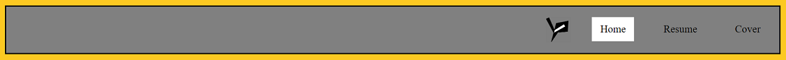
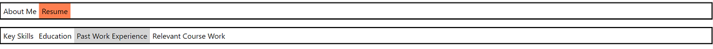

Web Design and Programming
Overview
Web design has been a key component of our studies at Fleming College this year. We began by learning the fundamentals of how the internet works, including basic concepts like what ping is, how HTTP functions, client-server relationships, and URL encoding. Soon afterwards, we moved on to HTML and CSS, which we spent several weeks becoming familiar with. We learned how to use them to define the content of a website, then modify that content in order to create a visually interesting and user-friendly design for any given website. Once we had a significant grasp of those two fundamental languages, we began to learn how to use Javascript to create more dynamic websites with a greater degree of interactivity.
Assignment 2: Personal Website
As a part of our program of study, we were each asked to create an individual website in order to exhibit the HTML, CSS, and general web design skills that we had learned in the course up to that point. Each site was required to contain at least two pages of content and was intended to serve as a personal resume. Since this was an individual assignment, each team member produced a unique final product. This section will exhibit points of interest from various team members' websites.

Tyler's website included a table communicating his educational achievements. He assigned a unique ID to each row, then used CSS to create a mouse-over effect that turned the background and text into the school's colours.
Thiluxsaan's website included a navigation bar which appeared at the top right of every page. It was attractive, well-aligned, and used CSS to change colours to a white background upon mouse-over.
Jackson's website included a navigation bar which appeared at the top left of every page. Each link gained a gray background upon mouse-over, and in addition, the top two links turned orange depending on which of the pages the user was on.
This project provided us with valuable hands-on experience in website design. It taught us how to design professional websites that will allow us (or any company we represent) to present our best possible face to the general public. In the modern era, having no web presence is almost the same as being invisible in a business sense, so having these skills could well prove vital in terms of gaining clients and networking within the GIS industry. Having completed this set of websites, we are much more confident in our ability to work in HTML, CSS, and Javascript, and we look forward to using those languages to implement solutions for future employers and clients.